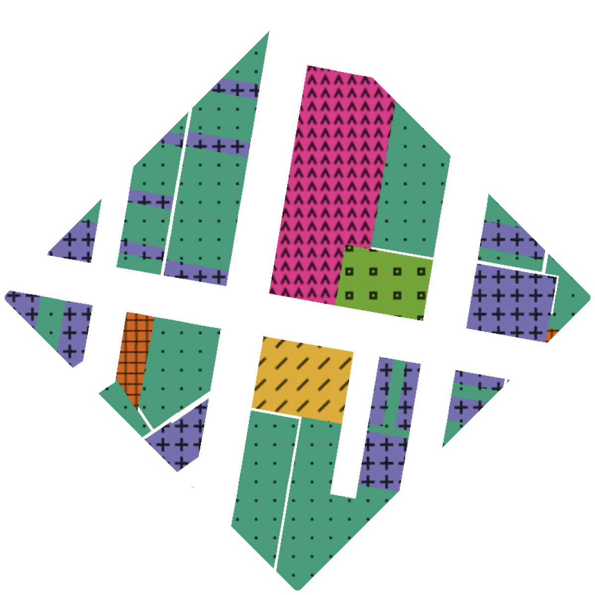

TextureMap includes resources for
polygon, line,
and
point
data. Every style can be modified to match your color palette and
adapt to the specific needs of your map.

Polygons
Shape up your polygon layers by offering an
accessibility-boosting pattern fill
Lines
Make your lines visually distinct with a mix of dashes and
gaps
Points
Replace circle markers with a variety of simple, recognizable
geometric shapes
Make your map more useful
Approximately 300 million people—or 4.5% of the global
population—have a form of color vision deficiency (the inability
to distinguish certain shades of color). Complex maps that depend
exclusively on color to symbolize
categorical data
can be frustrating, if not impossible, to read.
To avoid problematic colour combinations, the cartographer should
use colours with strong contrast and supplemental visual
variables, such as shape, size, and
pattern variations to allow all readers to
discern and directly interpret a symbol without consulting a
legend"
TextureMap gives you everything you need to start adding textures,
patterns, and shapes to your maps in minutes.